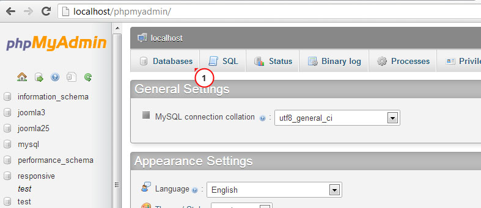
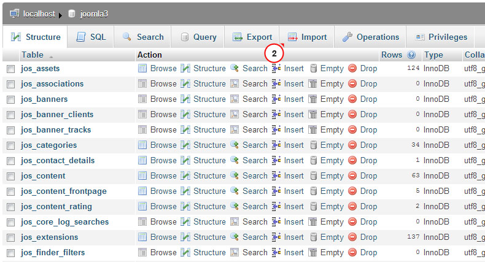
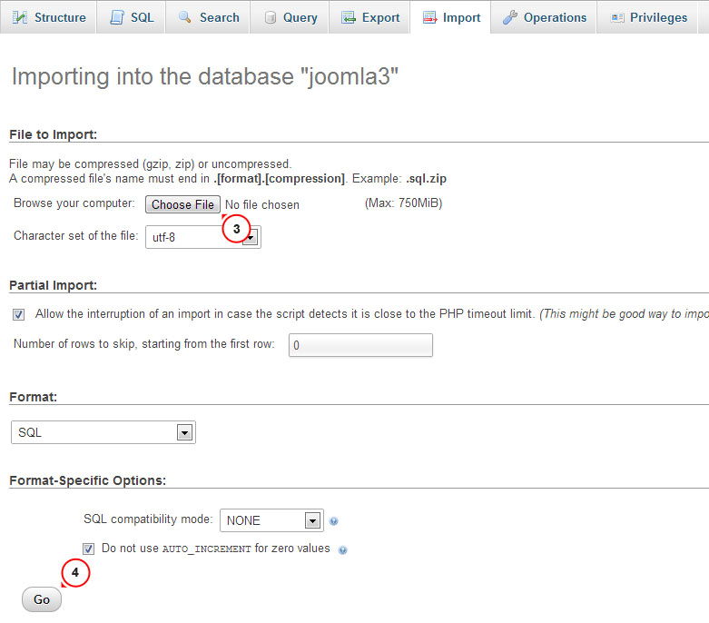

Einleitung Was es in diesem Paket gibt und wozu man es verwenden kann
Wir danken Ihnen, dass Sie sich für das Joomla Template entschieden haben. Die Dokumentation besteht aus unterschiedlichen Teilen und zeigt Ihnen, wie man Joomla Website von Grund auf selbst erstellt und verwandelt. Wir taten unser Bestes, um diese Anweisungen klar und einfach zu machen.
Was ist Joomla CMS?
Joomla CMS ist eine Open Source-Lösung zur Erstellung den inhaltsreichen Webseiten. Mit Joomla CMS können Sie Webseiten und mächtige online Anwendungen erstellen und dafür wird es fast keine technische Fähigkeiten und Kenntnisse benötigt. Dank ihre Benutzerfreundlichkeit und Erweiterungsfähigkeit ist jetzt Joomla die populärste Website Software. Mehr erhalten
Was ist Joomla Template?
Joomla Template ist ein Skin für Ihre Joomla CMS Plattform. Das heißt, dass Sie die Darstellung von Ihrer Webseite mit Hilfe vom Template einfach und schnell verändern können. Dafür sollen Sie nun das neue Template in nur wenigen einfachen Schritten installieren. Im Joomla Template finden Sie alle benötige Quelldateien, um es nach Ihrem Wünsch zu ändern und zu erweitern.
Datenstrukturen
Das heruntergeladene Template-Paket besteht aus viele verschiedene Ordner. Schauen wir mal, was in jedem Ordner drin steht:
- Documentation - hier gibt es Dokumentationen
- Documentation (Installation and Editing).html - die Hauptdokumentation. Sie sind jetzt hier:)
- Joomla - hat Joomla Theme Dateien
- theme###.zip - der Hauptarchiv der Theme. Hier gibt es alle Dateien der Theme. Man installiert ihn via Joomla Erweiterungs-Manager
- fullpackage.zip - hier gibt es das komplette Joomla Installationspaket mit Dateien von Engine, Theme und Beispielinhalte
- unzip.php - Datei zum Entpacken von Dateien aus fullpackage.zip, wenn man die auf dem Hosting Server hochladet.
- Screenshots - hier sind Screenshots vom Template. Nicht für Produktion
- Sources - es gibt hier Quelldateien der Vorlage
- psd - Adobe Photoshop Quelldateien (.psd) vom Template
- to_the_root_folder - hier befinden sich Dateien und Verzeichnises, die im Hauptverzeichnis Ihrer Joomla Installation hochgeladen werden sollen
- dump.sql - die Sicherungsdatei der Vorlage. Es gibt hier Beispielinhalte von Theme.
- pkg_bundle.zip - Hier finden Sie zusätzliche Erweiterungen, die mit der Theme mitgeliefert werden.
- fonts_info.txt - Hier finden Sie Links zum Download den benutzerdefinierten Schriften.
- info.txt - Hier gibt es Anweisungen zum Entpacken den Quelldateien
Vorbereitung Was Sie dafür brauchen
Bevor Sie Ihre Joomla Website einrichten, sorgen Sie dafür, dass Sie alles Notwendige vorbereitet haben. Führen Sie die folgenden Vorbereitungsschritte aus:
Software bearbeiten
Damit Sie sich mit dem Joomla Template wohl fühlen, empfehlen wir Ihnen alle notwendige Anwendungen herunterzuladen. Auf der Vorschauseite vom Template finden Sie die Liste der erforderlichen Software.
Je nach Template-Typ unterscheiden sich die Anforderungen, deswegen geben wir hier eine allgemeine Übersicht:
- Zunächst brauchen Sie die richtige Anwendungen, um den passwortgeschützten sources_#########.zip Arhiv zu entpacken. Nehmen Sie WinZip 9+ (Windows) und Stuffit Expander 10+ (Mac).
- Wenn Sie Grafiken und Bilder vom Template-Design oder .PSD Quelldatein bearbeiten möchten, wird es dafür die Adobe Photoshop Anweisung benötigt.
- Zur Bearbeitung von Quellcode-Dateien der Vorlage verwenden Sie einen Code-Editor, wie zum Beispiel Adobe Dreamweaver, Notepad++, Sublime Text usw.
- Zum Upload den Dateien auf den Hosting Server benötigen Sie einen FTP-Manager wie Total Commander, FileZilla, CuteFTP usw.
Hosting
Weil Joomla CMS eine PHP/MySQL-basierte Anwendung ist, sollen Sie eine Hosting-Umgebung vorbereiten, damit Sie Joomla verwenden können.
Wenn Sie schon einen funktionierenden Hosting haben, beachten Sie bitte, ob er Joomla Anforderungen entspricht und für Joomla Website angepasst wird.
Sonst können Sie Joomla lokal auf Ihrem Computer via lokalen Server betreiben. Um einen lokalen Server zu erstellen, verwenden Sie bitte die LocalHost-Anwendungen wie WAMP, AppServ, MAMP usw. Alle diese Programms kann man leicht installieren und zur Joomla Betreibung verwenden.
Lesen Sie bitte die u.a. Tutorials über die Konfiguration von lokale Entwicklungsumgebung:
Einstieg Worauf soll man klicken, damit es funktioniert
Vollständige Installation
Ich habe keine Joomla Website und möchte die von Grund auf installieren.
Dank dieser Methode bekommen Sie eine installierte Joomla CMS Engine, einen Beispielinhalt und alle benötigen Erweiterungen
Template Installation
Ich habe schon eine Joomla-basierte Website und möchte nun ihre Darstellung bei Installation von neuem Template verändern.
Dank dieser Methode bekommen Sie ein installiertes Joomla-Template und alle benötigen Erweiterungen.
Vollständige Installation
Die Methode von vollständiger Installation verwenden Sie, damit Joomla Website von Grund auf erstellen. Wir gehen davon aus, dass Sie alle Vorbereitungsschritte ausgeführt und alle notwendigen Dinge vorbereitet haben.
Datenbank erstellen
Wenn Sie Dateien auf dem Hosting-Server hochgeladen haben, vorbereiten Sie eine neue Datenbank für Ihre Joomla Website. Die neue Datenbank können Sie via Database Management Tool vom Hosting Control Panel (normalerweise PhpMyAdmin) erstellen.
Mit phpMyAdmin Tool können Sie eine neue Datenbank in 3 einfachen Schritte erstellen(schauen Sie die u.a. Slides):
- Im oberen Navigationsmenü drücken Sie den Button „Datenbank“ (eng. Database), um die Liste mit Datenbanken anzurufen.
- Im Feld "Neue Datenbank erstellen " (eng. Create new database) geben Sie den Datenbankname ein
- Auf der rechten Seite klicken Sie den Button „Erstellen “ (eng. Create)
Ihre Datenbank erscheint sich in der Liste von Datenbanken. Klicken Sie auf ihren Namen, um die Datenbank anzurufen
-

1. Drücken Sie den Button „Datenbank“ (eng. Database), um die Liste mit Datenbanken anzurufen
-

2. Geben Sie den Datenbankname ein
3. Klicken Sie den Button „Erstellen“ (eng. Create) -

4. Ihre Datenbank erscheint sich in der Liste von Datenbanken. Klicken Sie auf Ihren Namen, um die Datenbank anzurufen.
Schauen Sie bitte auch das ausführliche Video-Tutorial an: Wie man eine Datenbank erstellt
Falls Sie Probleme beim Erstellen einer Datenbank haben, wenden Sie sich für Support an Ihren Hosting-Anbieter
Hochladen und entpacken
Damit Sie mit Joomla arbeiten können, müssen Sie zuerst Dateien auf Ihrem Hosting Server hochaden. Dafür verwenden Sie Ihren Hosting- Dateimanager oder einen FTP-Manager eines Drittanbieters.
- Öffnen das Verzeichnis Ihrer Vorlage und gehen Sie zum 'joomla' Verzeichnis
- Wählen 'unzip.php' und 'fullpackage.zip' Dateien und laden Sie die auf Ihrem Server hoch ( Wie laden man Dateien auf einem Server hoch. )
- Im Browser tippen Sie den Pfad zur 'unzip.php' Datei von Ihrem Server (http://your_domain_name/unzip.php).
- Es sollte das folgende Bildschirm erscheinen:

Bild 1. Unzip.php Startbildschirm.
- Im Auswahlfeld 'Wählen Ihre zip Datei aus' (eng. Choose your zip file) wählen Sie die herunterdeladene fullpackage.zip Datei aus.
- Im Feld 'Entpacken in' (eng. Unzip to) geben Sie das Verzeichnis ein, wohin Sie Dateien extrahieren möchten.
- klicken Sie auf "Auspacken" (eng. 'Unzip'), um fortzufahren.
Bitte achten Sie darauf, die korrekten Zugriffsrechte das Verzeichnis, wohin Dateien entpackt werden sollen, zu setzen. Je nach der Serverkonfiguration sollten die Zugriffsrechte CHMOD 755 oder 777 sein.
Joomla CMS Installation
Öffnen Sie Ihren Browser und Tipppen Sie in der Adressleiste den Pfad zum Joomla-Verzeichnis (z.B. http://your_domain_name/joomla). Es sollte sich das Startbildschirm von der Joomla CSM Installation erscheinen:
Schritt 1 Konfiguration
Per DropDown "Sprache auswahlen" (eng. Select Language) wählen Sie die Sprache der Joomla Installation aus. .
Beachten Sie bitte: via DropDown "Sprache auswahlen" können Sie nun die Sprache vom Joomla Installationsprozess auswählen. Dies ändert die Sprache Ihrer Website nicht.
Im Bereich "Hauptkonfiguration" (eng. Main Configuration) sollen Sie alle Formularfelde ausfüllen. Benötigte Felder sind mit dem * Sternchen-Symbol markiert.
In der rechte Spalte füllen Sie die Eingaben "Admin Email", "Admin Username" and "Admin Password" aus, um einen neuen Benutzer von Joomla Website mit administrativen Rechten zu erstellen.
"Admin Email", "Admin Username" und "Admin Password" sind für den Zugriff auf dem Backend ihrer Joomla Website erforderlich. Speichern Sie sie.
Bild 2. Joomla CMS Installation. Schritt 1. Konfiguration
Wenn Sie damit fertig sind, drücken Sie auf den Button (eng. Next) in der obere rechte Ecke, um fortzufahren.
Schritt 2Datenbank
Im zweiten Schritt der Joomla CMS Installation geben Sie die Datenbankdetails ein. Wenn Sie sich nicht sicher sind, wenden Sie sich an Ihren Hosting-Anbieter, damit Sie die richtigen Daten erhalten.
Weil Sie Joomla von Grund auf installieren, sollten Sie nun "Host Name", "Benutzername"(Username), "Database Name" (Datenbankname) und "Password" angeben. Die anderen Optionen können Sie im Standardwert lassen. Obwohl kann es je nach dem Hosting-Anbieter ein bisschen anders sein.
Bild 3. Joomla CMS Installation. Schritt 2. Datenbank
Danach klicken Sie auf dem Schalter (eng. Install) in der obere rechte Ecke, um fortzufahren.
Schritt 3 Überblick
Sie haben der Joomla CMS Installation fast erledigt. Im Schritt „Überblick“ sollten Sie sich entschieden, ob Sie Joomla Beispieldaten installieren möchten oder nein.
Beachten Sie bitte: Beispieldaten werden benötigt, wenn Sie möchten, dass die Joomla Website gleich als wie beim Template-Vorschau (einschliesslich alle Bilder, Sample Text und Module) aussieht. Damit Ihr Template als wie bei der Vorschauseite aussieht, wählen Sie das Paket von Beispieldaten mit den Namen "sample_theme###" aus (statt ### steht die Nummer Ihrer Theme) .
Wählen Sie das Paket von Beispieldaten, das Sie installieren möchten, oder wählen Sie “None” (Kein), wenn Sie die saubere Joomla Website ohne Inhalt erstellen möchten.

Bild 4-1. Joomla CMS Installation. Schritt 3. Übersicht. Beispieldaten importieren
Überprüfen Sie, ob die Zugangsdaten von der Datenbankkonfiguration und vom Admin Panel gelten, und, wenn es benötigt wird, senden Sie die an Ihre Emailadresse

Bild 4-1. Joomla CMS Installation. Schritt 3. Übersicht. Konfiguration
Überprüfen Ihre Installation Einstellungen und schauen Sie, ob Ihrer Hosting Server die Joomla Anforderungen entspricht. Falls es eine rote Anzeige im Bereich "Recommended settings" (empfohlene Einstellungen) gibt, wenden Sie sich an Ihren Hosting Anbieter, um weitere Unterstützung zu erhalten.

Bild 4. Joomla CMS Installation. Schritt 3. Server Einstellungen
Wenn Sie damit fertig sind, klicken Sie auf den Button in der obere rechte Ecke, um fortzufahren.
Schritt 4Installation fertiggestellt
Gratulation! Sie haben Joomla CMS erfolgreich installiert.

Bild 5. Joomla CMS Installation. Schritt 4. Installation fertiggestellt
Aus Sicherheitsgründen löschen Sie bitte das "Installation" Verzeichnis von Ihrem Joomla Root.
Tippp: Schauen Sie bitte das Video-Tutorial an: Wie installiert man die Joomla 3 Engine
Beachten Sie bitte: wenn Sie mit dem Bereich " Installation fertiggestellt " (Complete Installation) fertig sind, können Sie die nächste Bereiche "Template Installation", "Beispieldaten Installation" (Sample data installation) und "Erweiterungen Installation" (Extensions Installation) überspringen, weil Sie alle diese Elemente schon installiert haben.
Jetzt können Sie mit der Konfiguration Ihrer Joomla CMS basierte Website beginnen. Drücken Sie auf den Button "Site" , um Ihre Website anzuschauen, oder auf "Administrator" , um Joomla Backend anzuschauen.
Template Installation
Diese Installation Methode wird verwendet, wenn Sie schon eine Joomla Website haben und nun die Websiet darstellung bei Joomla Template-Installation ändern möchten
Schritt 1 Öffnen Sie Ihr Joomla Administration Panel und gehen Sie auf "Extensions/Erweiterungen > Extensions Manager/Erweiterungs Manager" via Hauptmenü.

Bild 6. Joomla Template Installation. Schritt 1. Erweiterungen Manager
Schritt 2 Mit Hilfe vom Button "Wähle eine Datei" (Choose File) der Paket Datei finden Sie die Datei "theme###.zip" im "joomla" Verzeichnis Ihres Template-Pakets

Bild 7. Joomla Template Installation. Schritt 2. Archive der Theme hochladen
Drücken Sie auf den Button (Upload & Install), um das Joomla Template zu installieren.
Schritt 3 Nach dem Upload aktivieren Sie das installierte Template. Im Hauptmenü wählen Sie When uploading is complete you need to activate installed template. Im Hauptmenü wählen Sie "Extensions/Erweiterungen > Template Manager"
Bild 8. Joomla Template Installation. Schritt 3. Template Aktivation
Wählen Ihre neu installierte Template aus und klicken Sie auf den Button " Zum Standard machen" (Make Default) in der obere linke Ecke. Jetzt schauen Sie Ihre Webseite an, damit die Änderungen zu überprüfen
Beispieldaten Installation
Beispieldaten verwendet man, damit die Joomla Website als wie bei der Vorschauseite vomTemplate aussieht. Da gibt es Musterartikel, Bilder, Module, Einstellungen, Website Einstellungen und so weiter. Wenn Sie nicht plannieren, Beispiel Bilder oder anderen Sample Inhalt zu verwenden, überspringen Sie bitte diesen Schritt.
Um Beispieldaten zu instalieren, führen Sie zwei leichte Schritte durch.
Schritt 2. SQL Datei importieren.
Der Import der SQL Datei ist der letzte und wichtigste Schritt von Installation den Beispieldaten. SQL Datei ist ein Backup der Beispiel Datenbank, dort sind alle Joomla Beispieldaten gespeichert. Die SQL Datei kann man via Datenbankverwaltungstool (phpMyAdmin). Die SQL Datei der Vorlage ("dump.sql") befindet sich im "sources" Verzeichnis vom Template Paket.
Importieren Sie KEINE SQL Datei, wenn Sie eine funktionierende Site haben, weil dies Ihre Website Datenbank vollständig ersetzt und alle Ihre Daten verloren gehen.
VORSICHT: Vor dem Importieren einer SQL-Datei sollten Sie schauen, ob das Präfix Ihrer Datenbank Tabelle das Tabelle-Präfix von der SQL-Datei entspricht.
Prüfen Sie das Tabelle-Präfix direkt in der Datenbank via Datenbankverwaltungstool. Prüfen Sie die Tabellenamen. Das Präfix ist eine Symbolreihe vor den Tabellenamen. (Z.B. Tabelle "jos_assets" hat das Pröfix "jos_"). Sie können auch das Datenbank-Präfix in der "configuration.php" Datei von Ihrem Haupverzeichnises finden. Suchen Sie die Zeile 19: public $dbprefix = 'jos_'; ( "jos_" istdas Präfix)
Falls die Tabellen-Präfixen nicht entsprechen, öffnen Sie die Datei "dump.sql" mit Hinfe von Ihrem Code-Editor. Via die Option „Suchen und Ersetzen (CTRL+F oder CTRL+H Hotkeys) ersetzen Sie das "jos_" Tabellepräfix (In der SQL Datei verwendet) durch ein passendes. Schauen Sie bitte das ausführliche Video-Tutorial an: Wie ändert man das Datenbank Präfix in der SQL Datei .
Jetzt können Sie diese SQL Datei in Ihre Datenbak importieren.
Damit Sie Beispieldaten in der Datenbank importieren, fühlen Sie diese leichte Schritte aus: (werfen Sie einen Blick auf die unten angegebene Slides)
- Wählen Sie Ihre Datenbank aus der Datenbankliste, die sich links in phpMyAdmin befindet
- Im oberen Navigationsmenü klicken Sie auf den Button "Import/Importieren"
- Klicken Sie auf "Wähle Datei" (Choose file) und suchen Sie die .sql Datei im „sources“ Verzeichnis vom Template-Paket durch.
- Klicken Sie den Button “Weiter” (Go), um den Import von Beispieldaten zu starten
-

1. Wählen Sie Ihre Datenbank aus
-

2. Kliken auf den Button "Import/Importieren"
-

3. Klicken Sie auf "Wähle Datei" (Choose file) und suchen Sie die .sql Datei im „sources“ Verzeichnis vom Template-Paket durch
4. Klicken Sie den Button “Weiter” (Go), um den Import von Beispieldaten zu starten
Schauen Sie bitte das augführliche Video-Tutorial an: Wie importiert man eine SQL Datei via phpMyAdmin Tool
Modulkonfiguration
Das Layout von Joomla Website unterteilt ich in zwei wesentliche Bereiche – ein inhaltlicher Teil und Modulpositionen (schauen Sie die unten angegebene Positionskarte an, um mehr zu erfahren). Module werden üblicherweise dazu verwendet, um einen Inhalt auf die vorbereitete Position auszugeben
Positionskarte von Module
Je nach Template können sich die Positionen variieren, aber Sie können unten die allgemeine Positionskarte schauen:

Bild 9. Positionskarte von Module der Joomla Vorlage
Wie Sie sehen, wird der Inhalt Bereich in verschiedene Farben markiert. Es wird getan, weil der Inhaltsbereich standardmäßig keine Module verarbeiten kann. Dies zeigt nun den Seiteninhalt an
Ohne zugeweisene Module werden alle Positionen ausgeschaltet, deswegen hemmen sie Ihnen nicht.
Konfigurationstabelle von Module
Beachten Sie bitte: Wenn Beispieldaten vom Template installiert haben oder die Methode von vollständiger Installation verwenden haben, überspringen Sie den folgenden Schritt, weil dies mit der manuellen Modulkonfiguration verbunden ist.
Die unten angegebene Tabelle zeigt eine Auflistung aller Module, die diesem Template verwenden werden, und zeigt, wie man die richtig konfiguriert. Alle Module kann man durch das Joomla Admin Bereich mit Hilfe von Extensions/Erweiterungen > Module Manager/ Modul-Manager anrufen.

Bild 10. Joomla Modul-Manager
1 - Login Form (Loginformular)
- Type: mod_login
- Position: modal
- Class Suffix:
- Titel Anzeigen: yes/Ja
- Order: 1
- Seiten: All
- Zusätzliche Informationen:
2 - Breadcrumbs
- Type: mod_breadcrumbs
- Position: breadcrumbs
- Class Suffix:
- Show Title: no
- Order: 1
- Seiten: All
- Zusätzliche Informationen:
3 - Search (Suche)
- Type: mod_search
- Position: navigation
- Class Suffix: navbar-search pull-right
- Show Title: no
- Order: 1
- Seiten: All
- Zusätzliche Informationen:
4 - Copyright
- Type: mod_footer
- Position: copyright
- Class Suffix:
- Show Title: no
- Order: 1
- Seiten: All
- Zusätzliche Informationen:
5 - Archived Articles (archivierte Artikel)
- Type: mod_articles_archive
- Position: aside-right
- Class Suffix:
- Show Title: yes
- Order: 2
- Seiten: Blog
Blog. Donec eu elit in nisi
Blog. In neque arcu vulputate
Blog. Quisque gravida purus vitae
Blog. Vivamus luctus lectus sit
Blog. Vivamus congue turpis in augue
Blog. Curabitur eu dignissim velit
Archives - Zusätzliche Informationen:
6 - User Menu (Benutzeroberfläche)
- Type: mod_menu
- Position: header
- Class Suffix:
- Show Title: no
- Order: 1
- Seiten: All
- Zusätzliche Informationen:
7 - Superfish Menu (Superfish Menü)
- Type: mod_superfish_menu
- Position: navigation
- Class Suffix: navigation
- Show Title: no
- Order: 1
- Seiten: All
- Zusätzliche Informationen:
8 - Camera Slideshow (Kamera Diashow)
- Type: mod_camera_slideshow
- Position: showcase
- Class Suffix:
- Show Title: no
- Order: 1
- Seiten: Home
- Zusätzliche Informationen:
9 - Social Media
- Type: mod_menu
- Position: copyright
- Class Suffix:
- Show Title: no
- Order: 1
- Seiten: All
- Zusätzliche Informationen:
10 - Login Form (Loginformular)
- Type: mod_login
- Position: aside-right
- Class Suffix: aside
- Show Title: yes
- Order: 3
- Seiten: Blog
FAQs
Testimonials
Blog Categories
Blog. Donec eu elit in nisi
Blog. In neque arcu vulputate
Blog. Quisque gravida purus vitae
Blog. Vivamus luctus lectus sit
Blog. Vivamus congue turpis in augue
Blog. Curabitur eu dignissim velit
Archives - Zusätzliche Informationen:
11 - Search (Suche)
- Type: mod_search
- Position: aside-right
- Class Suffix: aside
- Show Title: yes
- Order: 4
- Seiten: FAQs
Testimonials - Zusätzliche Informationen:
12 - Categories (Kategorien)
- Type: mod_articles_categories
- Position: aside-right
- Class Suffix:
- Show Title: yes
- Order: 1
- Seiten: Blog
Blog. Donec eu elit in nisi
Blog. In neque arcu vulputate
Blog. Quisque gravida purus vitae
Blog. Vivamus luctus lectus sit
Blog. Vivamus congue turpis in augue
Blog. Curabitur eu dignissim velit - Zusätzliche Informationen:
13 - Our Team (Unser Team)
- Type: mod_articles_news_adv
- Position: mainbottom
- Class Suffix: team
- Show Title: yes
- Order: 1
- Seiten: About
- Zusätzliche Informationen:
14 - carouFredSel
- Type: mod_caroufredsel
- Position: feature
- Class Suffix:
- Show Title: yes
- Order: 1
- Seiten: Home (Startseite)
- Zusätzliche Informationen:
15 - Article Single
- Type: mod_articles_single
- Position: aside-left
- Class Suffix:
- Show Title: yes
- Order: 1
- Seiten: About (Über)
- Zusätzliche Informationen:
16 - Komento Activities (Komento Aktivitäten)
- Type: mod_komento_activities
- Position: aside-right
- Class Suffix:
- Show Title: yes
- Order: 1
- Seiten: Blog
Blog Categories
Blog. Donec eu elit in nisi
Blog. In neque arcu vulputate
Blog. Quisque gravida purus vitae
Blog. Vivamus luctus lectus sit
Blog. Vivamus congue turpis in augue
Blog. Curabitur eu dignissim velit - Zusätzliche Informationen:
17 - Komento Comments (Komento Kommentare)
- Type: mod_komento_comments
- Position: aside-right
- Class Suffix:
- Show Title: yes
- Order: 1
- Seiten: Blog
Blog Categories
Blog. Donec eu elit in nisi
Blog. In neque arcu vulputate
Blog. Quisque gravida purus vitae
Blog. Vivamus luctus lectus sit
Blog. Vivamus congue turpis in augue
Blog. Curabitur eu dignissim velit - Zusätzliche Informationen:
18 - mod_twitter_widget
- Type: mod_twitter_widget
- Position: aside-left
- Class Suffix:
- Show Title: yes
- Order: 1
- Seiten: All
- Zusätzliche Informationen:
Erweiterungen
Joomla Website-Funktionalität kann mit Hilfe von verschiedene Joomla Erweiterungen verbessert werden. Die einige von ihnen wird oft in unserer Vorlagen verwendet. Hier erfahren Sie, wie man mit benutzerdefinierten Erweiterungen arbeitet.
Articles Newsflash
Bild 11. Articles Newsflash (Erweiterter) Modul
Articles-Newsflash (Erweiterter) Modul ist eine verbesserte Version vom Standard Joomla Articles Newsflash Modul. Zusätzlich zu Standard Eigenschaften werden extra Konfigurationsoptionen und Bootsrap basierten Modul Templates angeboten.
Zusätzliche Optionen
Number of columns (Anzal von Spalten) – erlaubt Artikel in mehreren Spalten anzuzeigen. Dies kann man verwendet nun mit ‘horizontale’ und ‘bootstrapCols’ alternative Layouts.
Custom Link (benutzerdefinierter Link)- erlaubt Ihnen einen benutzerdefinierter Link unten dem Modul-Inhalt anzuzeigen. Er kann mit der externen URl oder mit einigem Joomla Menü-Punkt verknüpfen werden.

Bild 12. Custom Link
Pretext (Vorwand) – erlaubt einen Custom Text vor dem Modul Inhalt anzuzeigen.
Published Date(veröffentlichtes Datum) – stellt das Veröffentlichungszeitpunkt des Artikels dar.
Created by (Erstellt von) – zeigt den Autor des Artikels an
Show intro images (Intro Bilder anzeigen)- erlaubt das Intro Bild anzuzeigen.
Intro image align (Ausrichtung des Intro Bildes)- erlaubt Intro Bilder auszurichten
Bootstrap Layout -definiert welches Module Layout („fixiertes“ oder „zirkulierendes (=flüssiges)“) verwendet werden soll. Diese Funktion kann nun mit dem alternativen ‘bootstrapCols’ Layout verwendet.
Alternative Layouts
Horizontal (horizontale)-erlaubt Artikel in mehrere Spalte anzuzeigen. Style von Elementen wird aus der style.css Moduldatei vorgenommen. Jede Artikel Breite hängt vom Wert des ‘number of columns’ (Anzahl von Spalten) Parameters ab und wird in Prozenten wie Division von 100 durch die Spaltenanzahl gezählt.
BootstrapCols - erlaubt Artikle in mehreren Spalten und Zeilen anzuzeigen. Es ist basiert auf den Bootstrap Raster. Man kann dies mit fixiertem und zirkuliertem Layout verwenden (Artikelbreite wird in Pixeln oder Prozenten festgelegt).
Image Swoop

Bild 13. Modul "Image Swoop"
Der Modul "Image Swoop" ist einen atemberaubenden responsive Slider, den man als eine Kombination aus Standard Joomla Modul “Articles Newsflash” und kostenloses open-source- jQuery plugin “Camera Slideshow” entwickelt hat. Er fubktioniert perfekt auf dem Desktop-PC und auf den iOs oder Android mobilen Geräten. Er ist kompatibel mit alle modernen Browsern ab IE8
Der Modul "Image Swoop" hat verschiedene Konfigurationsoptionen, die Sie erreichen können, wenn Sie im Bereich Extensions > Module Manager vom Joomla Admin-Panel den Modul Image Swoop öffnen. Im Einstellungsbereich des Moduls können Sie alle Hauptoptionen vom jQuery Plugin "Camera Slideshow" konfigurieren.

Bild 14. Image Swoop Einstellungen
Über dem Optionstitel bewegen Sie den Mauszeiger, um eine Beschreibung zu sehen. Mehr über die Optionen vom Camera Slideshow jQuery plugin erfahren Sie auf der offizielle Website
Articles Single
” Articles single” ist einen Modul, der Ihnen ermöglicht, einen einzigen Artikel in der gewünschten Position anzeigen.

Bild 15. Modul “Articles Single”
Einen Artikel kann via seinen ID ausgewählt werden. In Einstellungen des Moduls geben Sie die ID vom Artikel im Feld "Article ID" an.
Die Artikel-ID findet man im Joomla Admin Bereich in Komponent> Artikelverwaltung (Component > Articles manager). ID ist die Nummer in der rechte Spalte.

Bild 16. Einstellungen vom “Articles Single”
Custom Link ist die einzige ungewöhnliche Option dieses Moduls. Dank ihr können Sie einen benutzerdefinierten Link unter dem Modul-Inhalt anzeigen. Er kann mit der externen URL oder einigem Joomla Menü-Punkt verbunden werden.
CarouFredSel
CarouFredSel ist einen Bilderkarusell-Modul, den man als eine Kombination vom Standard Joomla Articles Newsflash Modul und CarouFredSel jQuery Plugin entwickelt hat.

Bild 17. CarouFredSel Modul
In Einstellungen des Moduls sind alle benötige Optionen vom Karussell verfügbar.
- Richtung von Karussell-Rotation
- Breite eines Eintrags
- Sichtbare Einträge
- Animationsmöglichkeiten
- Navigation und Kontrollfunktionen

Bild 18. Einstellungen vom Modul CarouFredSel
Das Plugin „CarouFredSel” hat noch mehr Konfigurationsoptionen. Wenn Sie Ihre Optionen hinzufügen möchten, bearbeiten Sie die Datei \modules\mod_caroufredsel\tmpl\default.php.
Komento Kommentare
Komento ist eine Kommentarkomponente für Joomla. Sie erlaubt Ihnen, Kommentare in Joomla Artikel hinzuzufügen.

Bild 19. Komponent “Komento”
Man kann die Komponent “Komanto” im Joomla Admin Panel im Bereich Components/Kommentare > Komento anrufen.

Bild 20. Bereich “Komento Komponent”
Die Konfigurationseinstellungen rufen Sie in Components / Kommentare> Komento > Integrations mit dem Druck auf Articles/Artikel an.
Mit Hilfe von Konfigurationseinstellungen können Sie Kommentare für bestimmte Kategorien aktivieren, Captcha und Nutzerprofils hinzufügen usw. Mehr können Sie in der offizielle Website erfahren
Konfiguration von Seiten
Galerie Seite

Bild 21. Bilder vom Galerieelement
Galerie Seite zeigt Artikel aus der Kategorie 'Galerie' (Gallery) und ihre Unterkategorien. In der oberen rechten Ecke hat die Galerie Seite einen Filter, damit man Bilder nach Kategorien filtern kann.
Bilder hinzufügen
Um mehr Bilder zur Galerie anzuhängen, fügen Sie einfach neue Artikel zu Unterkategorien der 'Galerie' (Gallery). Jeder Artikel muss ein hochgeladenes Vollbild unf Intro Bild haben. Die beide Bilder werden normalerweise im Verzeichnis 'images/gallery' platziert.

Bild 22. Bilder vom Galerieelement
Intro Bild wird innerhalb der Vorschau von Gallerie und vom Galerieelement angezeigt. Das Vollbild wird dargestellt, wenn das Intro Bild angeklickt wird.
Layout anpassen
Das Layout der Galerie-Seite kann man als eine Joomla Kategorieseite anpassen. Im Joomla Adminbereich öffnen Sie 'Menüs > Hauptmenü' (Menus > Main Menu) und bearbeiten Sie dort das „Galerie“ Menüpunkt. Mit dem Druck auf den Tab Erweiterten Optionen (Advanced Options) können Sie die Einstallungen der Galerie-Seite anrufen.
Wenn Sie, zum Beispiel, die Anzahl den Spalten für die Galerie-Seite verändern möchten, verwandeln Sie die Option Spalten (Columns) vom Einstellungsbereich Blog Layout Options.

Bild 23. Anzahl den Spalten für die Galerie-Seite
Kontaktseite
Kontaktseite stellt den Kontaktformular, die Adresse und Google Map dar. Um die Kontaktinformationen ( Kontakt-E-Mail-Adresse, Adresse usw.) zu verändern, gehen Sie auf Komponente > Kontakt > Kontakt > Website Besitzer (Components > Contacts > Contacts > Website Owner). Mit Hilfe von oberen Tabs können Sie verschiedener Kontaktoptionen zugreifen.
Im System > Globale Konfiguration > Kontakt (System > Global Configuration > Contacts) konfigurieren Sie, was auf der Kontaktseite gestaltet sollte.
Google Map wird auf der Kontaktseite über das Google Map Plugin erstellt. Man kann es durch Erweiterungen > Plug-in Manager > Google Maps (Extensions > Plug-in Manager > Google Maps) konfigurieren

Bild 24. Plugin Manager
Tipp: Verwenden Sie den Filten über der Liste von Plugins, um Ihre Suche einzugrenzen.
Schauen Sie die ausführliche Video-Tutorial an: Wie ändert man Google Map Koordinaten
Template Einstellungen
Jede Vorlage hat ihre eigenen Konfigurationsoptionen. Man kann die anpassen, um Layout Klassen, Typografie Tags, zusätzliche Funktionen usw. der Theme zu einstellen. Template Optionenn kann man durch den Admin-Bereich via Erweiterungen > Vorlagenverwaltung (Extensions > Template Manager) zugreifen

Bild 25. Vorlagenverwaltung
Im Bereich „Vorlagenverwaltungsind“ wöhlen Sie die Theme aus, sie Sie bearbeiten möchten.
Layout
Mit den Lazout Optionen können Sie die Haupteinstellungen vom Theme-Layout verändern:

Bild 26 Layout Optionen
Theme Layout - wählen Sie, ob die Theme fixiert (Breite in Pixeln) oder zirkuliert (Breite in Prozent) sein sollte;
Logo - wählen Sie hier das Bild des Logos aus;
Logo Width (Logo Breite) – wählen Sie hier die Breite vom Logo- Container aus (nach dem Bootstrap- Raster);
Sidebar Width (Sidebar Breite)- legen Sie die Breite den Sidebars fest;
Typografie
Dank der Optionen von Typografie können Sie Tags für Artikeltitels aus verschiedenen Ansichten (besonderen Artikel, Kategorieansicht, Blog-Ansicht, Ansicht vom einzigen Artikel usw) auswählen. Um die Überschrift zu definieren, kann man verschiedene HTML Tags verwenden (h1, h2, h3, h4 etc). Tags sind verschieden wegen der logischen Bedeutung und des Stils. Mehr erfahren

Bild 27. Typografie-Optionen
Eigenschaften
Hier können Sie die zusätzlichen Vorlagefunktionen konfigurieren.

Bild 28. Zusätzlichen Eigenschaften
Mit To Top button und ToTop text kann man den Button “zum Anfang” (ToTop) und den Text des Eingabe-Buttons aktiveren/deaktivieren.
Addendum wo bekomme ich Hilfe, Support und zusätzliche Information
Wir taten unser Bestes, um diese Anweisungen klar wie möglich zu machen. Wenn Sie jedoch Schwierigkeiten mit dem Joomla Template haben oder Ihre Ideen zur Verbesserung von der Vorlage oder vom Dokumentation vorschlagen möchten, wenden Sie sich bitte an unseren Kundendienst:
Hilfe und Support
Dokumentation
Joomla! Erweiterungen
Auf extensions.joomla.org können Sie mehr als sechtausend Module, Plugins und Komponente herunterladen, damit Ihre Joomla Website mehr verschiedene Funktionen erhaltet.